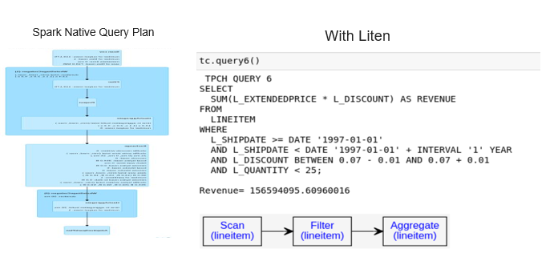

Liten, a Silicon Valley startup, champions a cutting-edge multi-agent platform designed to observe, reason, and act upon data. Its founders possess extensive expertise in AI and data applications and have a proven track record of accelerating platform development for superior performance. They bring valuable experience in optimizing Apache SparkTM performance for large-scale distributed analytics.
Modern enterprises are experiencing an unprecedented surge in data creation, where vast amounts of information are generated constantly. This expansion coincides with significant advances in cloud technology, marked by disaggregated systems. While there are significant and continuous hardware advancements, the organizations struggle to meet the ever increasing demands for performance improvements, reduction in cycle times and to save on computational and cloud costs. The organizations are also in a race to combat climate change and meet their sustainability targets.
Employing a unique tensor representation, the data agents within Liten AI can accelerate the queries by a huge multiplication factor of 50-100x thus helping the organizations achieve the twin goals of performance with sustainable computing while also saving costs in a competitive environment.
Multi Agent Platform with AI and Data Agents
Liten's multi-agent platform orchestrates intricate data and AI tasks, automating various engineering processes to enhance productivity and customer satisfaction. Leveraging both best-in-class third-party and proprietary foundational models, its AI agents are fine-tuned according to customer input, ensuring optimal performance. Liten data agents can handle petabytes of big data and are integrated into the platform.
Accelerating Data Agent by 100x

Current relational and tabular data platforms lack adaptation to leverage emerging technologies. Employing a unique tensor representation, the data agents within Liten accelerate queries by a factor of 100. They transform incoming data into a tensor-formatted columnar structure, optimizing processor and accelerated solutions to enhance the speed of existing queries. Liten seamlessly integrates into Spark clusters and can efficiently ingest data from various data warehouses.
Benchmark TPCH Query
The Transaction Processing Performance Council (TPC) sets industry-standard benchmarks for data and query performance. TPC BenchmarkTM H is a decision support benchmark. Benchmark tests are conducted for Query 5 and Query 6 of TPCH because they have complex joins and result in longer query plans. These tests involved utilizing both a standalone Spark cluster and a separate Liten service. Liten enhanced query performance through a tensor-based engine and preserved an in-memory cache of tensors to eliminate redundant creation processes.
TPCH Query 5
This query compiles the revenue generated from local suppliers.

Liten expedites this process by eliminating the necessity for joins. Instead, tensor data replaces joins with more straightforward multi-dimensional lookups. This streamlines operations by minimizing shuffle operations, resulting in a significant acceleration of the query.
The accompanying diagram illustrates the plan and showcases Liten's handling of this process.
TPCH Query 6
This query assesses the potential revenue growth achievable by removing company-wide discounts.
Liten notably streamlines the query plan, as illustrated in the diagram below.
In Liten, the query plan is simplified along with accelerated scan/aggregates. On a standard Azure DS2 VM, Spark 3.2 required 16 seconds to execute, whereas Liten completed the task in a mere 0.06 seconds, delivering over a 100x performance improvement.
Use Case Scenarios
Liten seamlessly operates within existing or new SparkTM clusters as a service. Once activated, it utilizes jar files in Spark tasks to perform accelerated functions through Liten. Jobs executed by customers maintain their settings but experience enhanced performance. Liten accelerates various tasks such as filters and joins, typically found in commonly used SQL query plans. Additionally, Liten can construct customized accelerated UDFs (User Defined Functions) tailored to individual customer requirements. These UDFs can be applied within queries or used as standalone functions, offering valuable solutions for specific customer use cases.
Sample customer use case in cloud data generation
One of our clients hosts extensive network traffic data in the cloud, reaching volumes that can span into petabytes. To address company needs and inquiries, they regularly query these files to detect policy violations. However, this process became notably slow, hindering their ability to meet service level requirements.
Cloud Data Lake
Liten offers a big data solution capable of storing limitless log data. It employs industry-standard open data lake formats for data storage. Specifically, in this scenario, data is stored in partitions categorized by traffic timestamps.
Accelerated Queries
To tackle this, Liten incorporates an acceleration layer by storing data in a tensor-formatted file. This diminishes the necessity for cross-referencing and joining with additional data dimensions. As a result, Liten expedited the customer's query, delivering the sought-after policy answers promptly.
Summary
Liten solutions enhance Spark performance for large-scale distributed analytics. They can be utilized either as a standalone service or added to an existing customer cluster as an additional service.